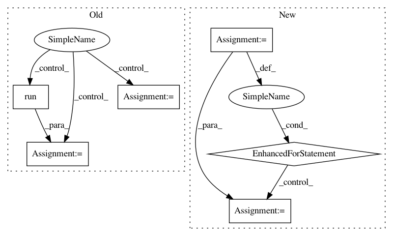

b7efdc787a7b9cc78f47e16fbd91e36ab5d12225,variance_reduction/baseline_comparison_prototype.py,,,#,139
Before Change
// TODO(cathywu) Kill the rest of this chunk of code
// Get the gradient for this episode, and save it in the gradBuffer
tBlah0 = sess.run(loglik_new,
feed_dict={observations: epx, input_y: epy,
advantages: discounted_epr,
score_old: old_score})
tBlah1 = sess.run(loglik_old,
feed_dict={observations: epx, input_y: epy,
advantages: discounted_epr,
score_old: old_score})
tBlah2 = sess.run(likratio,
feed_dict={observations: epx, input_y: epy,
advantages: discounted_epr,
score_old: old_score})
// print("Log likelihood ratio:", tBlah0, tBlah1, tBlah2)
// print(tLoglik_old[0], tLoglik_new[0])
tGrad = sess.run(newGrads,
After Change
// Get the gradient for each episode, and save it in the
// gradBuffer
// TODO(cathywu) compute gradients here
for epx, epy, discounted_epr in zip(epxs, epys,
discounted_eprs):
tGrad = sess.run(newGrads,
feed_dict={observations: epx, input_y: epy,
advantages: discounted_epr,
score_old: old_score})
for ix, grad in enumerate(tGrad):
gradBuffer[ix] += grad
// TODO(cathywu) compute gradients with V baseline
// TODO(cathywu) compute gradients with action baseline
sess.run(updateGrads, feed_dict={W1Grad: gradBuffer[0],
W2Grad: gradBuffer[1],
W3Grad: gradBuffer[2]})
old_score = output.eval(feed_dict={observations: x})
In pattern: SUPERPATTERN
Frequency: 3
Non-data size: 6
Instances
Project Name: flow-project/flow
Commit Name: b7efdc787a7b9cc78f47e16fbd91e36ab5d12225
Time: 2017-02-17
Author: cathywu@eecs.berkeley.edu
File Name: variance_reduction/baseline_comparison_prototype.py
Class Name:
Method Name:
Project Name: calico/basenji
Commit Name: 28f6dbec4bee2572fa7f94445d63cebb2de6dc9b
Time: 2019-09-27
Author: drk@calicolabs.com
File Name: bin/tfr_hdf5.py
Class Name:
Method Name: read_tfr
Project Name: HyperGAN/HyperGAN
Commit Name: cb29df4dea83d69ef9f5109398b23158a8c680dc
Time: 2018-09-25
Author: martyn@255bits.com
File Name: examples/next-frame.py
Class Name: VideoFrameSampler
Method Name: _sample